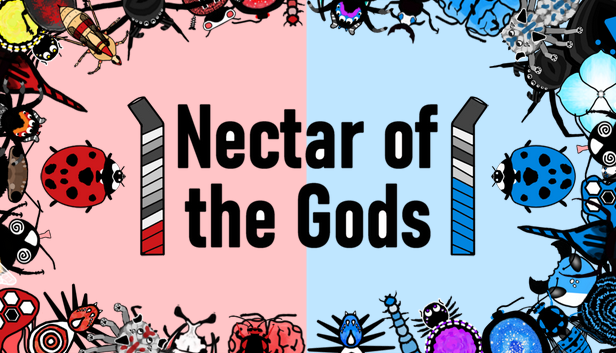

The Game
Nectar of the Gods is an unquenchable head-to-head real-time strategy / tower defense game where bugs battle over the finest beverages. You must strategically deploy a chosen bug family, nimbly navigate the countertop, and claim liquid nirvana!
Data
Developer: Ben Thomas
Publisher: Ben Thomas
Release Date: January 27, 2021
Platforms: Steam (Windows)
Team Size: 1
Length of Development: 9 months part time, 6 months full time
Development Tools: Unity 2020 Engine, Krita (Art + Animation), Audacity (Sound + Music), Trello (Project Management)
Goals
- Make a polished commercial multiplayer game inspired by chess and starcraft that challenged the player and let them play with their friends online.
- Learn every facet of what is required to launch a game: coding, art, animation, netcode, sound, promotion/marketing, trailer.
- Build the foundation for cool future projects.
What went right?
I finished the game! It is fun, playable, and feature complete. I made respectable cheerful art. The game has personality. It is not loaded with coding bugs.
I learned so much from the experience and feel confident I could make a number of game projects much faster with the experience I now have.
I am proud that I committed to and finished a project that took greater than a year. It takes great dedication to push through the grindy months.
I contracted the music from friends of a friend. They were incredibly fun to work with and the music turned out fantastic.
Releasing the game on one platform, Steam, ended up being the right call. As a solo developer trying to support multiple platforms I would have been stretched unsustainably thin, especially for a multiplayer game.
Facepunch.Steamworks, an open source C# wrapper of the Steamworks API worked like a charm and let me implement my online multiplayer entirely through Steam’s services.
Almost 3 months after release 5848 people have added the game on steam and 1591 unique players have played the game. A decent audience for a first time solo developer.
What went wrong?
Realtime Multiplayer
Independent developers, especially solo ones, are often discouraged from making online multiplayer games due to the complexity online multiplayer brings that would take resources away from adding more content to the game. I am happy I ignored this advice because multiplayer experiences drive me, but I absolutely regret not doing a turn based game.
I went with P2P (peer-to-peer) networking as a small time developer rather than paying for dedicated servers. This combined with realtime multiplayer in the game created latency issues I could not overcome. If the multiplayer was turn based and did not require split second timing I could have overcome the limitations of P2P networking rather than ship a game with subpar multiplayer experience. The game is certainly very playable, the latency can sometimes cause a desync of game state between the two players, a nightmare for a game that is entirely centered around competitive head-to-head realtime competition.
Free-to-play / Revenue
The free-to-play model of the game is you get access to the entire game for free with only 1 of the 3 playable bug families. In the $12.99 bug pack DLC you get “The Hive” and “Spidey Party”. These final two bug families add 16 unique bugs and create the “rock-paper-scissors” dynamic between the 3 playable factions inspired by starcraft.
I modeled by business plan off of multiplayer games I know and love. Free-to-play games like League of Legends, Apex Legends, Teamfight Tactics, Hearthstone, etc. I felt like I understood that a multiplayer game is as good as the strength of its community and going free-to-play helps grow that community. People will jump in due to the low barrier of entry, fall in love with the game, and spend money afterwards to enrich the experience.
What I did not consider is how many successful free-to-play indie games are out there? Does the audience for competitive multiplayer free-to-play games expect a huge amount of polish and support for the games they decide to invest in?
My game did not “take off”, and even though a lot of people played it, very very few purchased the full experience. After excluding reviewers and friends, roughly 5 in ~1600 players spent $12.99 to unlock the full experience.
I should have tailored my business plan to a smaller group of enthusiasts rather than copying the model of industry titans.
Press Coverage
Like revenue, I did feel like I had realistic expectations as a first time indie developer. But that doesn’t mean there weren’t things I could have done better.
I had an amazing free PR service through Post Horn PR who sent out a press release with codes to like 100 outlets and influencers. But not a single one covered my game. I think a part of that was that it was a small time game that didn’t look that interesting. But what I found in my later outreach is people are MUCH MUCH more likely to cover your game if you send them a personalized message on why you think the game would be a good fit for them. I was pretty burnt out but if I put more effort in this area I would have gotten better results.
I also found a lot of success on the “Woovit” platform getting smaller influencers to cover my game just by posting codes.
I never found a game dev "community"
This one is a little abstract. A big part of me wanting to make a game was to connect with people who made games. To join a like minded network of people who were equally passionate about games as I was. I wanted to make friends locally attending meetups (covid kinda wrecked this one). After my game was released I wanted to feel some belonging, comradery, and connection with people I respect.
But it didn’t really go down that way. My experience developing a commercial game was extremely solitary and somewhat lonely. I was not able to go to meetups with coronavirus starting right when I went full time on the game. And people in the industry/hobby making commercial things didn’t pay me much attention online, twitter, etc.
Making a game takes years, I’m not sure how people find partners to hustle with for years on end.
I could have done more, been more active on forums, discord, reddit, etc. But when I did participate I felt overwhelmed, like I was shouting into the void, not making a meaningful connection. I was also so tired from working on the game, trying to stay healthy, putting time into my personal life that I didn’t have a lot left over for the internet.
Controller Support
I spent a great deal of time making the game completely playable with only a controller because I personally like playing PC games with a controller. And I am happy it’s there for accessibility. But boy oh boy do the Steam stats show that hardly anybody plays the game with a controller. I just don’t think it’s the first option for fans of PC strategy games.
Art
I am so proud of the way the art turned out. I have no formal art training, and have made very little visual art in my life. But with just a drawing tablet and a commitment to a simple style I could visualize in my head I was able to create some striking albeit amateurish art. Get a feel for it in the launch trailer for the game.
Risk Management
I limited risk by:
- Making the game solo, reducing dependencies, costs, and complications.
- Keeping the game small, making a commercial game in about a year is somewhat reasonable compared to the much longer development cycles of other games.
- I created the initial prototype while I was working full time, so I knew I had something I was passionate about before I fully committed to it.
The riskiest part about this endeavour was that I quit my job to work on the game full time. I did not expect by any means to recoup my lost income. Part of making a game was just the joy of doing it and learning, not motivated by money.
I got the fulfillment, but the game has less than $200 of revenue in 3 months. I was prepared for the game to make little money but oof this one stings and takes a bit of wind out of the sails considering how much time I spent polishing to make a commercial product.
Mid-Project Changes
A few months into the project I bailed on any meaningful single player content. It would have taken the game twice as long to come out. And would significantly increase the amount of art the game would require. This was problematic because as a new artist my workflow was very slow and something I only enjoyed in smaller spurts. I am happy with this decision because even though some people would have enjoyed a campaign, I was far more driven by the action online.
At the very end of the project, about a week before launch, I retested the MacOS online version of the game, a version that had never had any issues, and it was not working. I have zero idea why it stopped working. Throughout the process I had not had to put any additional time into the MacOS support I just had to export “as Mac”. But it was a huge bummer. I did not have the bandwidth to figure it out since Mac is such a small portion of PC gamers. And just like that Mac support was lost :(
Summary of Lessons Learned
- If you are going to save money and time with Peer-to-Peer multiplayer make the game TURN BASED, not realtime.
- Making a game free-to-play to get more players does not equate at all to any predictable amount of revenue. Not every game is League of Legends.
- I learned I enjoy programming and design more than art and music. This was a really valuable lesson because if I try to do another 1+ year game development cycle I am much more likely to burn out if I need to do a lot of art and music.
- Making games doesn’t mean you automatically get to gain a bunch of friends who make games.
- Steam is really powerful, I was constantly impressed by the Steamworks API and the detail that goes into a Store page.
- Even though I read and watched countless guides on BizDev for indie games, and learned and applied a lot of it, it was nowhere near enough to reach real eyeball volume.
Conclusion
I am proud of Nectar of the Gods. It feels like a tremendous personal achievement. I really enjoyed playing it with friends and seeing some internet strangers review it. I am not sure what my future in game development looks like. I don’t think I could lone wolf another super long project, it's just not my nature. But I’ll always be on the hunt for ways to engage with gaming and eSports. Games are my life passion. Thanks for reading!